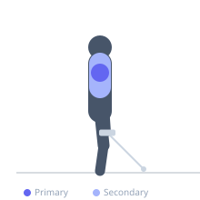

Exercise guide / Leaning Dumbbell Lateral Raise
Leaning Dumbbell Lateral Raise
The leaning lateral raise is performed by holding a fixed support with one hand and leaning the body away, then raising a dumbbell with the free arm in a lateral arc. The lateral lean places the medial deltoid under a greater stretch at the bottom position and creates a more consistent resistance profile throughout the range of motion compared to a vertical stance. This enhanced stretch at the bottom makes it one of the most effective dumbbell lateral raise variations for medial deltoid hypertrophy.
Primary muscles
deltoid lateral
Secondary muscles
deltoid anterior
trapezius upper
Equipment
Dumbbell (Fixed)


Starting position
- Stand beside an upright support (rack post, cable column). Grip the support with the inside hand. Lean the body away from the support, creating a straight angled line from feet to head. Hold a dumbbell in the outside hand with arm hanging down.
Setup
- The lean angle determines the bottom stretch — a greater lean creates a greater stretch. Begin with a moderate lean of 15-20 degrees.
Steps
- Step 1: Hold the support, lean away, dumbbell at the side.
- Step 2: Raise the dumbbell laterally in an arc from the hanging position.
- Step 3: Raise until the arm is parallel to the floor.
- Step 4: Lower slowly under control, letting the dumbbell hang for a full stretch.
- Step 5: Complete all reps, switch sides.
Coaching cues
- Let it hang fully at the bottom
- Raise from the elbow, not the wrist
- Feel the stretch — that's the point
Breathing
- Exhale on the raise, inhale on the lowering.
Range of motion
- Full hang at the bottom (enhanced stretch position), raise to shoulder height.
Tempo
- 2-1-3-0
Common mistakes
- Not using the full hang at the bottom — the stretch is a key advantage of this variation
- Excessive trap shrug at the top
Safety
- Ensure the fixed support is stable before leaning
Training
- hypertrophy: 12–20 reps
- hypertrophy: 3–4 sets
- Rest: {'hypertrophy': 60}